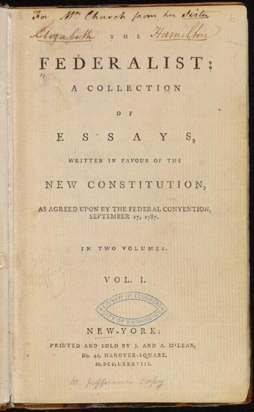
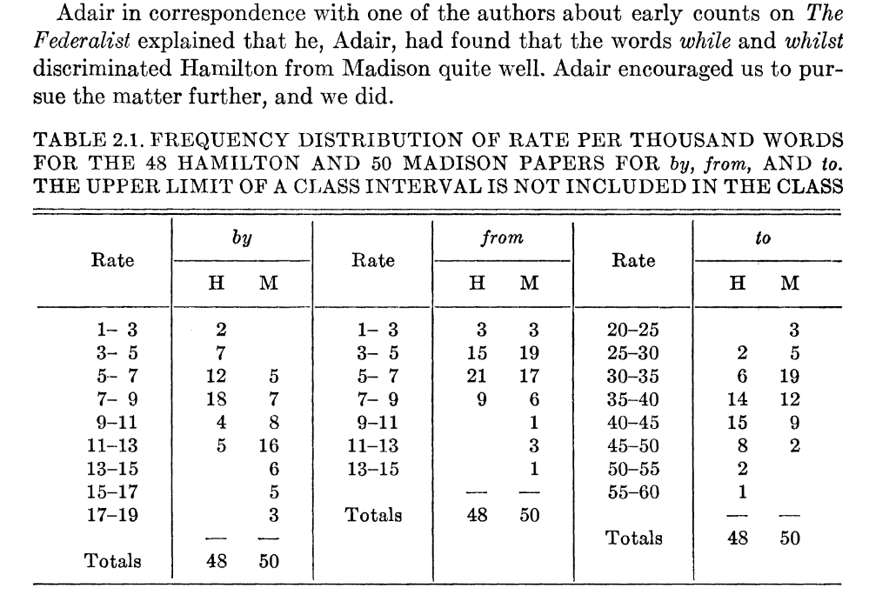

import json, re
import pandas as pd
import numpy as np
import plotnine as p9
import scipy
import sklearn.decomposition, sklearn.manifoldHands on with the Federalist Papers
The Federalist Papers
From the Library of Congress:
The Federalist, commonly referred to as the Federalist Papers, is a series of 85 essays written by Alexander Hamilton, John Jay, and James Madison between October 1787 and May 1788. The essays were published anonymously, under the pen name “Publius,” in various New York state newspapers of the time.

from Wikimedia
A mystery
Of 85 essays,
- five were written by John Jay
- three were written by Alexander Hamilton and James Madison together
- 15 were written by James Madison
- 51 were written by Alexander Hamilton
- but three were claimed* by both Madison and Hamilton
\(^*\) in Hamilton’s case, in a list written two days before his death by duel.
Mosteller and Wallace (1963)

The results (roughly)
Alexander joins forces with James Madison and John Jay To write a series of essays defending the new United States Constitution, entitled The Federalist Papers. The plan was to write a total of 25 essays, the work Divided evenly among the three men. In the end, they wrote eighty-five essays in the span of six months. John Jay got sick after writing five James Madison wrote twenty-nine. Hamilton wrote the other fifty-one!
Miranda, 2015
Mosteller and Wallace took a very hands-on and guided approach, counting numbers of certain ‘filler’ words per block of 200 words:
The words in an article were typed one word per line on a long paper tape, like adding machine tape. Then with scissors the tape was cut into slips, one word per slip . … When the counting was going on, if someone opened the door, slips of paper would fly about the room.
Mosteller, 2010, quoted in Text As Data
An exploratory approach
We’ll start with some exploration. A knee-jerk response to this question (“who wrote these eleven papers”) might be: “hey let’s do dimension reduction and see if the authors cluster”.
What do you think about this?
- If the authors do cluster, why do you think this would happen? (i.e., where’s the signal for this coming from?)
- If the authors do cluster, then does this give a good answer to the question?
- Are there ways that this might mislead us?
- What’s a more direct way you might answer the question?
Let’s have a look
set-up
The data
You can get the data from this file: data/federalist.json. It is a text file, where each line is a JSON entry, containing: author, text, date, title, paper_id, and venue.
with open("data/federalist.json", 'r') as f:
text = [json.loads(line) for line in f]
info = pd.DataFrame(
{ k: [t[k] for t in text] for k in ['author', 'date', 'title', 'paper_id', 'venue']}
).assign(length = [len(t['text'].split(" ")) for t in text])
info| author | date | title | paper_id | venue | length | |
|---|---|---|---|---|---|---|
| 0 | HAMILTON | None | General Introduction | 1 | For the Independent Journal | 1468 |
| 1 | JAY | None | Concerning Dangers from Foreign Force and Infl... | 2 | For the Independent Journal | 1513 |
| 2 | JAY | None | The Same Subject Continued (Concerning Dangers... | 3 | For the Independent Journal | 1310 |
| 3 | JAY | None | The Same Subject Continued (Concerning Dangers... | 4 | For the Independent Journal | 1480 |
| 4 | JAY | None | The Same Subject Continued (Concerning Dangers... | 5 | For the Independent Journal | 1214 |
| ... | ... | ... | ... | ... | ... | ... |
| 80 | HAMILTON | None | The Judiciary Continued, and the Distribution ... | 81 | From McLEAN's Edition, New York | 3562 |
| 81 | HAMILTON | None | The Judiciary Continued | 82 | From McLEAN's Edition, New York | 1409 |
| 82 | HAMILTON | None | The Judiciary Continued in Relation to Trial b... | 83 | From MCLEAN's Edition, New York | 5306 |
| 83 | HAMILTON | None | Certain General and Miscellaneous Objections t... | 84 | From McLEAN's Edition, New York | 3816 |
| 84 | HAMILTON | None | Concluding Remarks | 85 | From MCLEAN's Edition, New York | 2464 |
85 rows × 6 columns
What’s the plan?
- look at, and clean the data
- do PCA on the word count matrix
- think about the results
- adjust how we’re doing the PCA and iterate
Cleaning:
The re.sub function will be useful.
def clean(t):
return tCounting:
Once it’s cleaned, let’s count:
from collections import Counter
words = np.unique(" ".join([clean(t['text']) for t in text]).split(" "))
def tabwords(x, words):
d = Counter(x.split(" "))
out = np.array([d[w] for w in words])
return out
wordmat = np.array([tabwords(clean(t['text']), words) for t in text])PCA
Let’s do it “by hand” with SVD:
x = wordmat
pcs, evals, evecs = scipy.sparse.linalg.svds(x, k=4)
eord = np.argsort(evals)[::-1]
evals = evals[eord]
evecs = evecs[eord,:]
pcs = pcs[:,eord]
pc_df = pd.concat([
info,
pd.DataFrame({f"PC{k+1}" : pcs[:,k] for k in range(pcs.shape[1])})
], axis=1)
loadings = pd.DataFrame(evecs.T, columns=[f"PC{k+1}" for k in range(pcs.shape[1])], index=words)